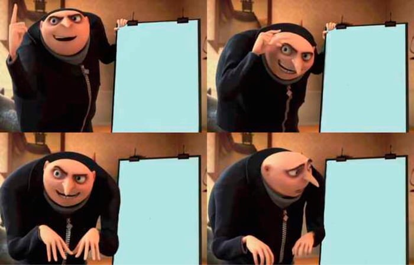

O que o sistema faz
Ao reler, a IA vê o que está lá.
- As telas
- As tabelas
- As funções
[ DIA 2 ]
Especificar antes de gerar.
[ RETOMADA ]

Pular o Plan Mandar direto pro Build A IA construiu outra coisa A IA construiu outra coisa[ LOST IN THE MIDDLE ]
Num estudo de Stanford, o modelo recebeu 20 textos, só um com a resposta. Quando ela estava no meio, ele acertou menos.
Modelo testado: GPT-3.5-Turbo
CONVERSA LONGA: O MEIO SE PERDEposição do texto certo
[ AMNÉSIA ]
Abrir uma sessão nova limpa a conversa, mas a IA não lembra de nada. Para entender o sistema, relê o código, e a janela enche de novo.
CUSTA TOKENS E TEMPOa IA não lembra de nada
[ AMNÉSIA ]
Ao reler, a IA vê o que está lá.
As decisões implícitas viram adivinhação.
[ SPEC ]
A IA não tornou a spec obsoleta. Tornou-a mais importante.
[ SPEC ]
| Sem spec | Com spec | |
|---|---|---|
| A IA | Adivinha e gera, com confiança, o código errado | A intenção está explícita e a IA fica previsível |
| A revisão | Olha sintaxe, não comportamento | Compara o resultado com a spec |
| Os erros | Aparecem tarde | As mudanças ficam localizadas e mais seguras |
[ SPEC ]
Em Markdown, no Git, junto com o código.
Comportamento errado se corrige na spec, e a IA gera de novo.
[ CASO DE USO ]
A cada caso de uso especificado e implementado, o sistema já funciona e pode ser testado.
FUNCIONA A CADA PASSO[ FIO CONDUTOR ]
Software errado é construído mais rápido do que nunca.
[ ARQUIVOS ]
| Arquivo | O que guarda | Do prompt de ontem |
|---|---|---|
constituicao.md |
Os princípios do projeto todo | “Apenas HTML, CSS e JavaScript puro” |
spec.md |
O quê e por quê de um caso de uso | “adicionar uma tarefa (com título)” |
plano.md |
O como: arquivos, dados e bibliotecas | “salvas no navegador (localStorage)” |
tarefas.md |
Passos pequenos e verificáveis | NADA NO PROMPT |
[ CONSTITUIÇÃO ]
Princípios que valem para o projeto todo, inclusive a stack que, no Dia 1, a IA escolheu sozinha.
O visual também: sem referência, a IA escolhe pela média.
[ ESPECIFICAÇÃO ]
Sem tecnologia. Uma spec por caso de uso, escrita na vez dele.
CLARIFICAÇÃOA IA pergunta o que está ambíguo. A resposta volta para a spec.
[ PLANO ]
Estrutura de arquivos, modelo de dados e bibliotecas do caso da vez.
Antes de seguir, conferir se o plano respeita a constituição.
[ TAREFAS ]
Cada tarefa ligada a um critério de aceitação da spec.
REVISÃO HUMANALer e corrigir spec, plano e tarefas antes de gerar qualquer código.